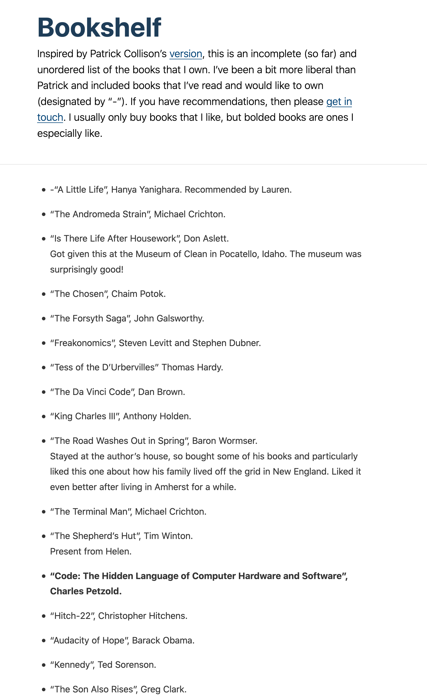
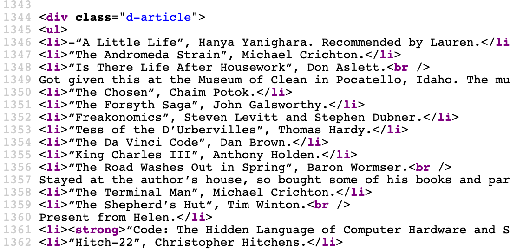

In this chapter we first go through a variety of approaches for gathering data, including the use of APIs and semi-structured data, such as JSON and XML, web scraping, converting PDFs, and using optical character recognition, especially to obtain text data.
9.2 APIs
In everyday language, and for our purposes, an Application Programming Interface (API) is a situation in which someone has set up specific files on their computer such that we can follow their instructions to get them. For instance, when we use a gif on Slack, Slack asks Giphy’s server for the appropriate gif, Giphy’s server gives that gif to Slack and then Slack inserts it into your chat. The way in which Slack and Giphy interact is determined by Giphy’s API. More strictly, an API is just an application that runs on a server that we access using the HTTP protocol.
We focus on using APIs for gathering data. And so, with that focus, an API is a website that is set-up for another computer to be able to access, rather than a person. For instance, we could go to Google Maps: https://www.google.com/maps. And we could then scroll and click and drag to center the map on Canberra, Australia. Or we could paste this into the browser: https://www.google.com/maps/@-35.2812958,149.1248113,16z. We just used the Google Maps API, and the result should be a map similar to Figure 9.1).
Figure 9.1: Example of Google Maps, as at 29 January 2022
The advantage of using an API is that the data provider specifies exactly the data that they are willing to provide, and the terms under which they will provide it. These terms may include aspects such as rate limits (i.e. how often we can ask for data), and what we can do with the data, for instance, we might not be allowed to use it for commercial purposes, or to republish it. Additionally, because the API is being provided specifically for us to use it, it is less likely to be subject to unexpected changes or legal issues. Because of this it is ethically and legally clear that when an API is available we should try to use it rather than web scraping.
We will now go through a few case studies of using APIs. In the first we deal directly with an API using httr(Wickham 2019b). In the second we access data from Twitter using rtweet(Kearney 2019). And in the third we access data from Spotify using spotifyr(Thompson et al. 2020). Developing comfort with gathering data through APIs enables access to exciting datasets. For instance, Wong (2020) use the Facebook Political Ad API to gather all 218,100 of the Trump 2020 campaign ads to better understand the campaign.
9.2.1 Case study: Gathering data from arXiv, NASA, and Dataverse
We use GET() from httr(Wickham 2019b) to obtain data from an API directly. This will try to get some specific data and the main argument is ‘url’. In a way, this is very similar to the earlier Google Maps example. In that example, the specific information that we were interested in was a map.
In this case study we will use an API provided by arXiv: https://arxiv.org. arXiv is an online repository for academic papers before they go through peer-review, and these are typically referred to as ‘pre-prints’. After installing and loading httr, we use GET() to ask arXiv to obtain some information about the pre-print of Alexander and Alexander (2021).
We can use status_code() to check whether we received an error from the server. And assuming we received something back from the server, we can use content() to display the information. In this case we have received XML formatted data, which we can read using read_xml() from xml2(Wickham, Hester, and Ooms 2021). XML is a semi-formatted structure, and it can be useful to start by having a look at it using html_structure().
Or we might be interested to create a dataset based on extracting various aspects of this XML tree. For instance, we might be interested to look at the ‘entry’, which is the eighth item, and in particular to obtain the title and the URL, which are the fourth and ninth items, respectively, within entry.
# A tibble: 1 × 2
title link
<chr> <chr>
1 "The Increased Effect of Elections and Changing Prime Ministers on Topi… http…
Each day NASA provides the Astronomy Picture of the Day (APOD) through its APOD API. We can again use GET() to obtain the URL for the photo on particular dates and then display it.
Examining the returned data using content(), we can see that we are provided with various fields, such as date, title, explanation, and a URL. And we can provide that URL to include_graphics() from knitr to display it (Figure 9.2)).
content(NASA_APOD_20211226)$date
[1] "2021-12-26"
content(NASA_APOD_20211226)$title
[1] "James Webb Space Telescope over Earth"
content(NASA_APOD_20211226)$explanation
[1] "There's a big new telescope in space. This one, the James Webb Space Telescope (JWST), not only has a mirror over five times larger than Hubble's in area, but can see better in infrared light. The featured picture shows JWST high above the Earth just after being released by the upper stage of an Ariane V rocket, launched yesterday from French Guiana. Over the next month, JWST will move out near the Sun-Earth L2 point where it will co-orbit the Sun with the Earth. During this time and for the next five months, JWST will unravel its segmented mirror and an array of sophisticated scientific instruments -- and test them. If all goes well, JWST will start examining galaxies across the universe and planets orbiting stars across our Milky Way Galaxy in the summer of 2022. APOD Gallery: Webb Space Telescope Launch"
[1] "On July 20, 1969 the Apollo 11 lunar module Eagle safely touched down on the Moon. It landed near the southwestern corner of the Moon's Mare Tranquillitatis at a landing site dubbed Tranquility Base. This panoramic view of Tranquility Base was constructed from the historic photos taken from the lunar surface. On the far left astronaut Neil Armstrong casts a long shadow with Sun is at his back and the Eagle resting about 60 meters away ( AS11-40-5961). He stands near the rim of 30 meter-diameter Little West crater seen here to the right ( AS11-40-5954). Also visible in the foreground is the top of the camera intended for taking stereo close-ups of the lunar surface."
Figure 9.2: Photo of the James Webb Space Telescope over Earth and another of Tranquility Base obtained from the NASA APOD API
Finally, another common API response in semi-structured form is JSON. We can parse JSON with jsonlite(Ooms 2014). A Dataverse is a web application that makes it easier to share dataset. We can use an API go query a demonstration dataverse. For instance we might be interested in datasets related to politics.
We can also look at the dataset using View(politics_datasets), which allows us to expand the tree based on what we are interested in and even get the code that we need to focus on different aspects by hovering on the item and then clicking the icon with the green arrow (Figure 9.3)).
Figure 9.3: Example of hovering over an JSON element, ‘items’, where the icon with a green arrow can be clicked on to get the code that would focus on that element
This tells us how to obtain the dataset of interest.
Twitter is a rich source of text and other data. The Twitter API is the way in which Twitter asks that we gather these data. And rtweet(Kearney 2019) is built around this API and allows us to interact with it in ways that are similar to using any other R package. Initially, we can use the Twitter API with just a regular Twitter account.
Begin by installing and loading rtweet and tidyverse. We then need to authorize rtweet and we start that process by calling a function from the package, for instance get_favorites() which will return a tibble of a user’s favorites. This will open a browser, and we then log into a regular Twitter account (Figure 9.4)).
library(rtweet)library(tidyverse)
get_favorites(user ="RohanAlexander")
Figure 9.4: rtweet authorisation page
Once the application is authorized, then we can use get_favorites() to actually get the favorites of a user and save them.
# A tibble: 10 × 2
screen_name text
<chr> <chr>
1 EconAndrew "How much better are the investment opportunities available to t…
2 simonpcouch "There's a new release of #rstats broom up on CRAN as of last ni…
3 MineDogucu "🚨 New manuscript🚨\n📕 Content and Computing Outline of Two Un…
4 reid_nancy "Latest issue. From the intro: \"... it has been a great privile…
5 tjmahr "bathing is good, folks"
6 andrewheiss "finished hand washing that load in the bathtub and am now the w…
7 monkmanmh "@CMastication https://t.co/3Eh0mLy44v"
8 eplusgg "Stares from Ontario https://t.co/swzYhaptF9"
9 ryancbriggs "Same. https://t.co/C9pNpXO0F9"
10 flynnpolsci "I’m not great at coming up with assignments for intro courses b…
We can use search_tweets() to search for tweets about a particular topic. For instance, we could look at tweets using a hashtag commonly associated with R: ‘#rstats’.
# A tibble: 6 × 2
screen_name text
<chr> <chr>
1 SuccessAnalytiX "The Science of Success \n\nhttps://t.co/xLM2OrqHBd\n\n#BigDa…
2 babycoin_dev "BabyCoin (BABY)\n\nGUI wallet v2.05 => https://t.co/CFNtp…
3 rstatsdata "#rdata #rstats: Yield of 6 barley varieties at 18 locations …
4 PDH_SciTechNews "#Coding Arm Puts Security Architecture to the Test With New …
5 PDH_SciTechNews "#Coding Network Engineer: Skills, Roles & Responsibiliti…
6 PDH_SciTechNews "#Coding CockroachDB Strengthens Change Data Capture - iProgr…
Other useful functions that can be used include get_friends() to get all the accounts that a user follows, and get_timelines() to get a user’s recent tweets. Registering as a developer enables access to more API functionality.
When using APIs, even when they are wrapped in an R package, in this case rtweet, it is important to read the terms under which access is provided. The Twitter API docs are surprisingly readable, and the developer policy is especially clear: https://developer.twitter.com/en/developer-terms/policy. To see how easy it is to violate the terms under which an API provider makes data available, consider that we saved the tweets that we downloaded. If we were to push these to GitHub, then it is possible that we may have accidentally stored sensitive information if there happened to be some in the tweets. Twitter is also explicit about asking those that use their API to be especially careful about sensitive information and not matching Twitter users with off-Twitter folks. Again, the documentation around these restricted uses is clear and readable: https://developer.twitter.com/en/developer-terms/more-on-restricted-use-cases.
9.2.3 Case study: Gathering data from Spotify
For the final case study, we will use spotifyr(Thompson et al. 2020), which is a wrapper around the Spotify API. Install install.packages('spotifyr') and load the package.
library(spotifyr)
To access the Spotify API, we need a Spotify Developer Account: https://developer.spotify.com/dashboard/. This will require logging in with a Spotify account and then accepting the Developer Terms (Figure 9.5).
Continuing with the registration process, in our case, we ‘do not know’ what we are building and so Spotify requires us to use a non-commercial agreement. To use the Spotify API we need a ‘Client ID’ and a ‘Client Secret’. These are things that we want to keep to ourselves because anyone with the details could use our developer account as though they were us. One way to keep these details secret with a minimum of hassle is to keep them in our ‘System Environment’. In this way, when we push to GitHub they should not be included. (We followed this process without explanation in Chapter @ref(interactive-communication) when we used mapdeck.) We will use usethis(Wickham and Bryan 2020) to modify our System Environment. In particular, there is a file called ‘.Renviron’ which we will open using edit_r_environ() and add our ‘Client ID’ and ‘Client Secret’ to.
library(usethis)edit_r_environ()
When we run edit_r_environ(), our ‘.Renviron’ file will open and we can add our ‘Spotify Client ID’ and ‘Client Secret’. It is important to use the same names, because spotifyr will look in our environment for keys with those specific names.
Save the ‘.Renviron’ file, and then restart R (‘Session’ -> ‘Restart R’). We can now use our ‘Spotify Client ID’ and ‘Client Secret’ as needed. And functions that require those details as arguments will work without them being explicitly specified again. We will get and save some information about Radiohead, the English rock band, using get_artist_audio_features(). One of the required arguments is authorization, but as that is set, by default, to look at the ‘.Renviron’ file, we do not need to specify it here.
There is a variety of information available based on songs. We might be interested to see whether their songs are getting longer over time (Figure 9.6)).
artist_name track_name album_name
1 Radiohead Everything In Its Right Place KID A MNESIA
2 Radiohead Kid A KID A MNESIA
3 Radiohead The National Anthem KID A MNESIA
4 Radiohead How to Disappear Completely KID A MNESIA
5 Radiohead Treefingers KID A MNESIA
6 Radiohead Optimistic KID A MNESIA
library(lubridate)radiohead |>mutate(album_release_date =ymd(album_release_date)) |>ggplot(aes(x = album_release_date, y = duration_ms)) +geom_point() +theme_minimal() +labs(x ="Album release date",y ="Duration of song (ms)" )
Figure 9.6: Length of each Radiohead song, over time, as gathered from Spotify
One interesting variable provided by Spotify about each song is ‘valence’. The Spotify documentation describe this as a measure between 0 and 1 that signals the ‘the musical positiveness’ of the track with higher values being more positive. Further details are available at the documentation: https://developer.spotify.com/documentation/web-api/reference/#/operations/get-audio-features. We might be interested to compare valence over time between a few artists, for instance, the American rock band The National, and the American singer Taylor Swift.
Then we can bring them together and make the graph (Figure 9.7)). This appears to show that while Taylor Swift and Radiohead have largely maintained their level of valence overtime, The National has decreased theirs.
Figure 9.7: Comparing valence, over time, for Radiohead, Taylor Swift, and The National
How amazing that we live in a world that all that information is available with very little effort or cost. And having gathered the data, there is a lot that could be done. For instance, Pavlik (2019) uses an expanded dataset to classify musical genres and The Economist (2022) looks at how language is associated with music streaming on Spotify. Our ability to gather such data enables us to answer questions that had to be considered experimentally in the past, for instance Salganik, Dodds, and Watts (2006) had to use experimental data rather than the real data we are able to access. But at the same time, it is worth thinking about what valence is purporting to represent. Little information is available in the Spotify documentation about how this is being created. And it is doubtful that one number can completely represent how positive a song is.
9.3 Web scraping
Web scraping is a way to get data from websites. Rather than going to a website using a browser the copy and pasting, we write code that does it for us. This opens a lot of data to us, but on the other hand, it is not typically data that is being made available for these purposes. This means that it is important to be respectful of it. While generally not illegal, the specifics about the legality of web scraping depend on jurisdictions and the specifics of what we are doing, and so it is also important to be mindful of this. While our use would rarely be commercially competitive, of particular concern is the conflict between the need for our work to be reproducible with the need to respect terms of service that may disallow data republishing (Luscombe, Dick, and Walby 2021). And finally, web scraping imposes a cost on the website host, and so it is important to reduce this to the extent possible.
That all said, web scraping is an invaluable source of data. But they are typically datasets that can be created as a by-product of someone trying to achieve another aim. For instance, a retailer may have a website with their products and their prices. That has not been created deliberately as a source of data, but we can scrape it to create a dataset. As such, the following principles are useful to guide web scraping.
Avoid it. Try to use an API wherever possible.
Abide by their desires. Some websites have a ‘robots.txt’ file that contains information about what they are comfortable with scrapers doing, for instance ‘https://www.google.com/robots.txt’.
Reduce the impact.
Firstly, slow down the scraper, for instance, rather than having it visit the website every second, slow it down using sys.sleep(). If we only need a few hundred files, then why not just have it visit the website a few times a minute, running in the background overnight?
Secondly, consider the timing of when we run our scraper. For instance, if we are scraping a retailer then maybe we should set our script to run from 10pm through to the morning, when fewer customers are likely using the site. Similarly, if it is a government website and they have a big monthly release, then it might be polite to avoid that day.
Take only what is needed. For instance, we do not need to scrape the entire of Wikipedia if all we need is the names of the ten largest cities in Croatia. This reduces the impact on the website, and allows us to more easily justify our actions.
Only scrape once. This means we should save everything as we go so that we do not have to re-collect data. Similarly, once we have the data, we should keep that separate and not modify it. Of course, if we need data over time then we will need to go back, but this is different to needlessly re-scraping a page.
Do not republish the pages that were scraped. (This contrasts with datasets that we create from it.)
Take ownership and ask permission if possible. At a minimum level all scripts should have our contact details in them. Depending on the circumstances, it may be worthwhile asking for permission before you scrape.
Web scraping is possible by taking advantage of the underlying structure of a webpage. We use patterns in the HTML/CSS to get the data that we want. To look at the underlying HTML/CSS we can either:
open a browser, right-click, and choose something like ‘Inspect’; or
save the website and then open it with a text editor rather than a browser.
HTML/CSS is a markup language comprised of matching tags. If we want text to be bold, then we would use something like:
<b>My bold text</b>
Similarly, if we want a list then we start and end the list, as well as each item.
<ul> <li>Learn webscraping</li> <li>Do data science</li> <li>Proft</li></ul>
When scraping we will search for these tags.
To get started, we can pretend that we obtained some HTML from a website, and that we want to get the name from it. We can see that the name is in bold, so we want to focus on that feature and extract it.
The language used by rvest to look for tags is ‘node’, so we focus on bold nodes. By default html_nodes() returns the tags as well. We can focus on the text that they contain, with html_text().
In this case study we will scrape a list of books from: https://rohanalexander.com/bookshelf.html. We will then clean the data and look at the distribution of the first letters of author surnames. It is slightly more complicated than the example above, but the underlying approach is the same: download the website, look for the nodes of interest, extract the information, clean it.
We use rvest(Wickham 2019c) to download a website, and to then navigate the html to find the aspects that we are interested in. And we use tidyverse to clean the dataset. We first need to go to the website and then save a local copy.
Now we need to navigate the HTML to get the aspects that we want, and to then put them into some sensible structure. We will start with trying to get the data into a tibble as quickly as possible because this will allow us to more easily use dplyr verbs and tidyverse functions.
To get the data into a tibble we first need to identify the data that we are interested in using html tags. If we look at the website then we need to focus on list items (Figure 9.8). And we can look at the source, focusing particularly on looking for a list (Figure 9.9).

Figure 9.8: Books website as displayed
Figure 9.9: HTML for the top of the books website and the list of books

The tag for a list item is ‘li’, so we can use that to focus on the list.
# A tibble: 6 × 2
author title
<chr> <chr>
1 Bryant, John, and Junni L. Zhang Bayesian Demographic Estimation and Fore…
2 Chan, Ngai Hang Time Series
3 Clark, Greg The Son Also Rises
4 Duflo, Esther Expérience, science et lutte contre la p…
5 Foster, Ghani, Jarmin, Kreuter, Lane Big Data and Social Science
6 Francois Chollet with JJ Allaire Deep Learning with R
There are some at the end that we need to get rid of because they are from a ‘best of’.
all_books <- all_books |>slice(1:142) |>filter(author !="‘150 Years of Stats Canada!’.")
Finally, we could make a table of the distribution of the first letter of the names (Table 9.1).
Table 9.1: Distribution of first letter of author names in a collection of books
First letter
Number of times
⭐
12
A
6
B
8
C
13
D
7
E
5
F
6
G
13
H
6
I
3
J
1
K
3
l
1
L
4
M
8
N
2
O
4
P
7
R
3
S
12
T
6
W
9
Y
1
Z
1
9.3.2 Case study: Web scraping UK Prime Ministers from Wikipedia
In this case study we are interested in how long UK prime ministers lived, based on the year that they were born. We will scrape data from Wikipedia using rvest(Wickham 2019c), clean it, and then make a graph. Every time we scrape a website things will change. Each scrape will largely be bespoke, even if we can borrow some code from earlier projects. It is completely normal to feel frustrated at times. It helps to begin with an end in mind.
To that end, we can start by generating some simulated data. Ideally, we want a table that has a row for each prime minister, a column for their name, and a column each for the birth and death years. If they are still alive, then that death year can be empty. We know that birth and death years should be somewhere between 1700 and 1990, and that death year should be larger than birth year. Finally, we also know that the years should be integers, and the names should be characters. So, we want something that looks roughly like this:
One of the advantages of generating a simulated dataset is that if we are working in groups then one person can start making the graph, using the simulated dataset, while the other person gathers the data. In terms of a graph, we are aiming for something like Figure 9.10.
Figure 9.10: Sketch of planned graph showing how long UK prime ministers lived
We are starting with a question that is of interest, which how long each UK prime minister lived. As such, we need to identify a source of data While there are plenty of data sources that have the births and deaths of each prime minister, we want one that we can trust, and as we are going to be scraping, we want one that has some structure to it. The Wikipedia page about UK prime ministers fits both these criteria: https://en.wikipedia.org/wiki/List_of_prime_ministers_of_the_United_Kingdom. As it is a popular page the information is more likely to be correct, and the data are available in a table.
We load rvest and then download the page using read_html(). Saving it locally provides us with a copy that we need for reproducibility in case the website changes, and also means that we do not have to keep visiting the website. But it is likely not our property, and so this is typically not something that should be necessarily redistributed.
As with the earlier case study we are looking for patterns in the HTML that we can use to help us get closer to the data that we want. This is an iterative process and requires a lot of trial and error. Even simple examples will take time.
One tool that may help is the SelectorGadget: https://rvest.tidyverse.org/articles/articles/selectorgadget.html. This allows us to pick and choose the elements that we want, and then gives us the input to give to html_nodes() (Figure 9.11))
Figure 9.11: Using the Selector Gadget to identify the tag, as at 13 March 2020.
# Read in our saved dataraw_data <-read_html("pms.html")
# We can parse tags in orderparse_data_selector_gadget <- raw_data |>html_nodes("td:nth-child(3)") |>html_text()head(parse_data_selector_gadget)
[1] "\nSir Robert Walpole(1676–1745)\n"
[2] "\nSpencer Compton1st Earl of Wilmington(1673–1743)\n"
[3] "\nHenry Pelham(1694–1754)\n"
[4] "\nThomas Pelham-Holles1st Duke of Newcastle(1693–1768)\n"
[5] "\nWilliam Cavendish4th Duke of Devonshire(1720–1764)\n"
[6] "\nThomas Pelham-Holles1st Duke of Newcastle(1693–1768)\n"
In this case there is are a few blank lines that we will need to filter away.
# A tibble: 6 × 1
raw_text
<chr>
1 "\nSir Robert Walpole(1676–1745)\n"
2 "\nSpencer Compton1st Earl of Wilmington(1673–1743)\n"
3 "\nHenry Pelham(1694–1754)\n"
4 "\nThomas Pelham-Holles1st Duke of Newcastle(1693–1768)\n"
5 "\nWilliam Cavendish4th Duke of Devonshire(1720–1764)\n"
6 "\nThomas Pelham-Holles1st Duke of Newcastle(1693–1768)\n"
Now that we have the parsed data, we need to clean it to match what we wanted. In particular we want a names column, as well as columns for birth year and death year. We will use separate() to take advantage of the fact that it looks like the dates are distinguished by brackets.
initial_clean <- parsed_data |>mutate(raw_text =str_remove_all(raw_text, "\n")) |>separate(raw_text, into =c("Name", "not_name"), sep ="\\(",remove =FALSE) |># The remove = FALSE option here means that we # keep the original column that we are separating.separate(not_name, into =c("Date", "all_the_rest"), sep ="\\)",remove =FALSE)head(initial_clean)
# A tibble: 6 × 5
raw_text Name not_name Date all_the_rest
<chr> <chr> <chr> <chr> <chr>
1 Sir Robert Walpole(1676–1745) Sir … 1676–17… 1676… ""
2 Spencer Compton1st Earl of Wilmington(1673–… Spen… 1673–17… 1673… ""
3 Henry Pelham(1694–1754) Henr… 1694–17… 1694… ""
4 Thomas Pelham-Holles1st Duke of Newcastle(1… Thom… 1693–17… 1693… ""
5 William Cavendish4th Duke of Devonshire(172… Will… 1720–17… 1720… ""
6 Thomas Pelham-Holles1st Duke of Newcastle(1… Thom… 1693–17… 1693… ""
# A tibble: 6 × 6
raw_text Name Title not_name Date all_the_rest
<chr> <chr> <chr> <chr> <chr> <chr>
1 Sir Robert Walpole(1676–1745) Sir … <NA> 1676–17… 1676… ""
2 Spencer Compton1st Earl of Wilmington… Spen… <NA> 1673–17… 1673… ""
3 Henry Pelham(1694–1754) Henr… <NA> 1694–17… 1694… ""
4 Thomas Pelham-Holles1st Duke of Newca… Thom… <NA> 1693–17… 1693… ""
5 William Cavendish4th Duke of Devonshi… Will… <NA> 1720–17… 1720… ""
6 Thomas Pelham-Holles1st Duke of Newca… Thom… <NA> 1693–17… 1693… ""
cleaned_data <- initial_clean |>select(Name, Date) |>separate(Date, into =c("Birth", "Died"), sep ="–", remove =FALSE) |># The # PMs who have died have their birth and death years separated by a hyphen, but # we need to be careful with the hyphen as it seems to be a slightly odd type of # hyphen and we need to copy/paste it.mutate(Birth =str_remove_all(Birth, "born"),Birth =str_trim(Birth) ) |># Alive PMs have slightly different formatselect(-Date) |>mutate(Name =str_remove(Name, "\n")) |># Remove some html tags that remainmutate_at(vars(Birth, Died), ~as.integer(.)) |># Change birth and death to integersmutate(Age_at_Death = Died - Birth) |># Add column of the number of years they liveddistinct() # Some of the PMs had two goes at it.head(cleaned_data)
# A tibble: 6 × 4
Name Birth Died Age_at_Death
<chr> <int> <int> <int>
1 Sir Robert Walpole 1676 1745 69
2 Spencer Compton 1673 1743 70
3 Henry Pelham 1694 1754 60
4 Thomas Pelham-Holles 1693 1768 75
5 William Cavendish 1720 1764 44
6 John Stuart 1713 1792 79
Our dataset looks similar to the one that we said we wanted at the start (Table 9.2).
Table 9.2: UK Prime Ministers, by how old they were when they died
Prime Minister
Birth year
Death year
Age at death
Sir Robert Walpole
1676
1745
69
Spencer Compton
1673
1743
70
Henry Pelham
1694
1754
60
Thomas Pelham-Holles
1693
1768
75
William Cavendish
1720
1764
44
John Stuart
1713
1792
79
George Grenville
1712
1770
58
Charles Watson-Wentworth
1730
1782
52
William Pitt the Elder
1708
1778
70
Augustus FitzRoy
1735
1811
76
Frederick NorthLord North
1732
1792
60
William Petty
1737
1805
68
William Cavendish-Bentinck
1738
1809
71
William Pitt the Younger
1759
1806
47
Henry Addington
1757
1844
87
William Grenville
1759
1834
75
Spencer Perceval
1762
1812
50
Robert Jenkinson
1770
1828
58
George Canning
1770
1827
57
F. J. Robinson
1782
1859
77
Arthur Wellesley
1769
1852
83
Charles Grey
1764
1845
81
William Lamb
1779
1848
69
Sir Robert Peel
1788
1850
62
Lord John Russell
1792
1878
86
Edward Smith-Stanley
1799
1869
70
George Hamilton-Gordon
1784
1860
76
Henry John Temple
1784
1865
81
John Russell
1792
1878
86
Benjamin Disraeli
1804
1881
77
William Ewart Gladstone
1809
1898
89
Robert Gascoyne-Cecil
1830
1903
73
Archibald Primrose
1847
1929
82
Arthur Balfour
1848
1930
82
Sir Henry Campbell-Bannerman
1836
1908
72
H. H. Asquith
1852
1928
76
David Lloyd George
1863
1945
82
Bonar Law
1858
1923
65
Stanley Baldwin
1867
1947
80
Ramsay MacDonald
1866
1937
71
Neville Chamberlain
1869
1940
71
Winston Churchill
1874
1965
91
Clement Attlee
1883
1967
84
Sir Winston Churchill
1874
1965
91
Sir Anthony Eden
1897
1977
80
Harold Macmillan
1894
1986
92
Sir Alec Douglas-Home
1903
1995
92
Harold Wilson
1916
1995
79
Edward Heath
1916
2005
89
James Callaghan
1912
2005
93
Margaret Thatcher
1925
2013
88
John Major
1943
NA
NA
Tony Blair
1953
NA
NA
Gordon Brown
1951
NA
NA
David Cameron
1966
NA
NA
Theresa May
1956
NA
NA
Boris Johnson
1964
NA
NA
At this point we would like to make a graph that illustrates how long each prime minister lived. If they are still alive then we would like them to run to the end, but we would like to color them differently.
cleaned_data |>mutate(still_alive =if_else(is.na(Died), "Yes", "No"),Died =if_else(is.na(Died), as.integer(2022), Died)) |>mutate(Name =as_factor(Name)) |>ggplot(aes(x = Birth, xend = Died,y = Name,yend = Name, color = still_alive)) +geom_segment() +labs(x ="Year of birth",y ="Prime minister",color ="PM is alive",title ="How long each UK Prime Minister lived, by year of birth") +theme_minimal() +scale_color_brewer(palette ="Set1")
9.3.3 Case study: Downloading multiple files
Considering text as data is exciting and opens up a lot of different research questions. Many guides assume that we already have a nicely formatted text dataset, but that is rarely actually the case. In this case study we will download files from a few different pages. While we have already seen two examples of web scraping, those were focused on just one page, whereas we often need many. Here we will focus on this iteration. We will use download.file() to do the download, and purrr(Henry and Wickham 2020) to apply this function across multiple sites.
The Reserve Bank of Australia (RBA) is Australia’s central bank and sets monetary policy. It has responsibility for setting the cash rate, which is the interest rate used for loans between banks. This interest rate is an especially important one, and has a large impact on the other interest rates in the economy. Four times a year – February, May, August, and November – the RBA publishes a statement on monetary policy, and these are available as PDFs. In this example we will download the four statements published in 2021.
First we set-up a dataframe that has the information that we need.
Then we can apply the function download.files() to these four
Then we can write a function that will download the file, let us know that it was downloaded, wait a polite amount of time, and then go get the next file.
The result is that we have downloaded these four PDFs and saved them to our computer. In the next section we will build on this to discuss getting information from these PDFs.
9.4 PDFs
In contrast to an API, a PDF is usually only produced for human rather than computer consumption. The nice thing about PDFs is that they are static and constant. And it is nice that they make data available at all. But the trade-off is that:
It is not overly useful to do larger-scale statistical analysis.
We do not know how the PDF was put together so we do not know whether we can trust it.
We cannot manipulate the data to get results that we are interested in.
Indeed, sometimes governments publish data as PDFs because they do not actually want us to be able to analyze it. Being able to get data from PDFs opens up a large number of datasets.
There are two important aspects to keep in mind when approaching a PDF with a mind to extracting data from it:
Begin with an end in mind. Planning and then literally sketching out what we want from a final dataset/graph/paper stops us wasting time and keeps us focused.
Start simple, then iterate. The quickest way to make a complicated model is often to first build a simple model and then complicate it. Start with just trying to get one page of the PDF working or even just one line. Then iterate from there.
We will start by walking through several examples and then go through a case study where we will gather data on US Total Fertility Rate, by state.
Figure 9.12 is a PDF that consists of just the first sentence from Jane Eyre taken from Project Gutenberg (Bronte 1847).
Figure 9.12: First sentence of Jane Eyre
If assume that it was saved as ‘first_example.pdf’, then we can pdftools(Ooms 2019a) to get the text from this one-page PDF into R.
We can see that the PDF has been correctly read in, as a character vector.
We will now try a slightly more complicated example that consists of the first few paragraphs of Jane Eyre (Figure 9.13). Also notice that now we have the chapter heading as well.
Again, we have a character vector. The end of each line is signaled by ‘\n’, but other than that it looks pretty good. Finally, we consider the first two pages.
Notice that the first page is the first element of the character vector, and the second page is the second element. As we are most familiar with rectangular data, we will try to get it into that format as quickly as possible. And then we can use our regular tidyverse functions to deal with it.
First we want to convert the character vector into a tibble. At this point we may like to add page numbers as well.
We then want to separate the lines so that each line is an observation. We can do that by looking for ‘\n’ remembering that we need to escape the backslash as it is a special character.
# A tibble: 93 × 2
raw_text page_number
<chr> <int>
1 "CHAPTER I" 1
2 "There was no possibility of taking a walk that day. We had been… 1
3 "leafless shrubbery an hour in the morning; but since dinner (Mr… 1
4 "company, dined early) the cold winter wind had brought with it … 1
5 "penetrating, that further out-door exercise was now out of the … 1
6 "" 1
7 "I was glad of it: I never liked long walks, especially on chill… 1
8 "coming home in the raw twilight, with nipped fingers and toes, … 1
9 "chidings of Bessie, the nurse, and humbled by the consciousness… 1
10 "Eliza, John, and Georgiana Reed." 1
# … with 83 more rows
9.4.1 Case-study: Gathering data on the US Total Fertility Rate
The US Department of Health and Human Services Vital Statistics Report provides information about the total fertility rate (the average number of births per woman if women experience the current age-specific fertility rates throughout their reproductive years) for each state for nineteen years. The US persists in only making this data available in PDFs, which hinders research. But we can use the approaches above to get the data into a nice dataset.
For instance, in the case of the year 2000 the table that we are interested in is on page 40 of a PDF that is available at https://www.cdc.gov/nchs/data/nvsr/nvsr50/nvsr50_05.pdf. The column of interest is labelled: “Total fertility rate” (Figure 9.14).
Figure 9.14: Example Vital Statistics Report, from 2000
The first step when getting data out of a PDF is to sketch out what we eventually want. A PDF typically contains a lot of information, and so it is handy to be very clear about what you need. This helps keep you focused, and prevents scope creep, but it is also helpful when thinking about data checks. We literally write down on paper what we have in mind. In this case, what is needed is a table with a column for state, year and TFR (Figure 9.15).
Figure 9.15: Planned dataset of TFR for each year and US state
There are 19 different PDFs, and we are interested in a particular column in a particular table in each of them. Unfortunately, there is nothing magical about what is coming. This first step requires working out the link for each, and the page and column name that is of interest. In the end, this looks like this.
The first step is to get some code that works for one of them. I’ll step through the code in a lot more detail than normal because we’re going to use these pieces a lot.
We will choose the year 2000. We first download and save the PDF using download.file().
We then read the PDF in as a character vector using pdf_text() from pdftools. And then convert it to a tibble, so that we can use familiar verbs on it.
# A tibble: 6 × 1
raw_data
<chr>
1 "40 National Vital Statistics Report, Vol. 50, No. 5, Revised May 15, 20022"
2 ""
3 "Table 10. Number of births, birth rates, fertility rates, total fertility ra…
4 "United States, each State and territory, 2000"
5 "[By place of residence. Birth rates are live births per 1,000 estimated popu…
6 "estimated in each area; total fertility rates are sums of birth rates for 5-…
Now we are searching for patterns that we can use. Let us look at the first ten lines of content.
So we can now separate this in to separate columns. First we want to match on when there is at least two dots (remembering that the dot is a special character and so needs to be escaped).
# A tibble: 6 × 3
raw_data state data
<chr> <chr> <chr>
1 "40 National Vital Statistics Report, Vol. 50, No. 5, Revised May… "40 … <NA>
2 "" "" <NA>
3 "Table 10. Number of births, birth rates, fertility rates, total … "Tab… <NA>
4 "United States, each State and territory, 2000" "Uni… <NA>
5 "[By place of residence. Birth rates are live births per 1,000 es… "[By… <NA>
6 "estimated in each area; total fertility rates are sums of birth … "est… <NA>
We get the expected warnings about the top and the bottom as they do not have multiple dots. (Another option here is to use pdf_data() which would allow us to use location rather than delimiters.)
We can now separate the data based on spaces. There is an inconsistent number of spaces, so we first squish any example of more than one space into just one.
To have it iterate through each of the lines in the dataset that contains our CSVs (i.e. where it says 1, we want 1, then 2, then 3, etc.).
Where it has a filename, we need it to iterate through our desired filenames (i.e. year_2000, then year_2001, then year_2002, etc).
We would like for it to do all of this in a way that is a little robust to errors. For instance, if one of the URLs is wrong or the internet drops out then we would like it to just move onto the next PDF, and then warn us at the end that it missed one, not to stop. (This does not really matter because it is only 19 files, but it is easy to find oneself doing this for thousands of files).
Here we take download.file() and pass it two arguments: .x and .y. Then walk2() applies that function to the inputs that we give it, in this case the URLs columns is the .x and the pdf_names column is the .y. Finally, safely() means that if there are any failures then it just moves onto the next file instead of throwing an error.
We now have each of the PDFs saved and we can move onto getting the data from them.
Now we need to get the data from the PDFs. As before, we are going to build on the code that we used before. That code (overly condensed) was:
The first thing that we want to iterate is the argument to pdf_text(), then the number in in slice() will also need to change (that is doing the work to get only the page that we are interested in).
Two aspects are hardcoded, and these may need to be updated. In particular:
The separate only works if each of the tables has the same columns in the same order; and
the slice (which restricts the data to just the states) only works in this case.
Finally, we add the year only at the end, whereas we would need to bring that up earlier in the process.
We will start by writing a function that will go through all the files, grab the data, get the page of interest, and then expand the rows. We will then use pmap_dfr() from purrr to apply that function to all of the PDFs and to output a tibble.
[1] "Done with 2000"
[1] "Done with 2001"
[1] "Done with 2002"
[1] "Done with 2003"
[1] "Done with 2004"
[1] "Done with 2005"
[1] "Done with 2006"
[1] "Done with 2007"
[1] "Done with 2008"
[1] "Done with 2009"
[1] "Done with 2010"
[1] "Done with 2011"
[1] "Done with 2012"
[1] "Done with 2013"
[1] "Done with 2014"
[1] "Done with 2015"
[1] "Done with 2016"
[1] "Done with 2016"
[1] "Done with 2017"
[1] "Done with 2017"
[1] "Done with 2018"
head(raw_dhs_data)
# A tibble: 6 × 4
raw_data state data year_of_data
<chr> <chr> <chr> <dbl>
1 "40 National Vital Statistics Report, Vol. 50, No. 5… "40 … 50, … 2000
2 "" "" <NA> 2000
3 "Table 10. Number of births, birth rates, fertility … "Tab… <NA> 2000
4 "United States, each State and territory, 2000" "Uni… <NA> 2000
5 "[By place of residence. Birth rates are live births… "[By… <NA> 2000
6 "estimated in each area; total fertility rates are s… "est… <NA> 2000
Now we need to clean up the state names and then filter on them.
Table 9.3: First ten rows of a dataset of TFR by US state, 2000-2019
State
Year
TFR
Alabama
2,000
2,021
Alaska
2,000
2,437
Arizona
2,000
2,652
Arkansas
2,000
2,140
California
2,000
2,186
Colorado
2,000
2,356
Connecticut
2,000
1,932
Delaware
2,000
2,014
District of Columbia
2,000
1,976
Florida
2,000
2,158
9.4.2 Optical Character Recognition
All of the above is predicated on having a PDF that is already ‘digitized’. But what if it is images? In that case we need to first use Optical Character Recognition (OCR) using tesseract(Ooms 2019b). This is a R wrapper around the Tesseract open-source OCR engine.
Let us see an example with a scan from the first page of Jane Eyre (Figure 9.16).
What are some types of probability sampling, and in what circumstances might you want to implement them (write two or three pages)?
There have been some substantial political polling ‘misses’ in recent years (Trump and Brexit come to mind). To what extent do you think non-response bias was the cause of this (write a page or two, being sure to ground your writing with citations)?
It seems like a lot of businesses have closed since the pandemic. To investigate this, we walk along some blocks downtown and count the number of businesses that are closed and open. To decide which blocks to walk, we open a map, start at the lake, and then pick every 10th street. This type of sampling is (pick one)?
Cluster sampling.
Systematic sampling.
Stratified sampling.
Convenience sampling.
Please name some reasons why you may wish to use cluster sampling (select all)?
Balance in responses.
Administrative convenience.
Efficiency in terms of money.
Underlying systematic concerns.
Estimation of sub-populations.
Please consider Beaumont, 2020, ‘Are probability surveys bound to disappear for the production of official statistics?’. With reference to that paper, do you think that probability surveys will disappear, and why or why not (please write a paragraph or two)?
In your own words, what is an API (write a paragraph or two)?
Find two APIs and discuss how you could use them to tell interesting stories (write a paragraph or two for each)?
Find two APIs that have an R packages written around them. How could you use these to tell interesting stories (write a paragraph or two)?
What is the main argument to httr::GET() (pick one)?
‘url’
‘website’
‘domain’
‘location’
What are three reasons why we should be respectful when getting scraping data from websites (write a paragraph or two)?
What features of a website do we typically take advantage of when we parse the code (pick on)?
HTML/CSS mark-up.
Cookies.
Facebook beacons.
Code comments.
What are three advantages and three disadvantages of scraping compared with using an API (write a paragraph or two)?
What are three delimiters that could be useful when trying to bring order to the PDF that you read in as a character vector (write a paragraph or two)?
Which of the following, used as part of a regular expression, would match a full stop (hint: see the ‘strings’ cheat sheet) (pick one)?
‘.’
‘.’
‘\.’
‘\.’
Name three reasons for sketching out what you want before starting to try to extract data from a PDF (write a paragraph or two for each)?
What are three checks that we might like to use for demographic data, such as the number of births in a country in a particular year (write a paragraph or two for check)?
What are three checks that we might like to use for economic data, such as GDP for a particular country in a particular year (write a paragraph or two for check)?
What does the purrr package do (select all that apply)?
Enhances R’s functional programming toolkit.
Makes loops easier to code and read.
Checks the consistency of datasets.
Identifies issues in data structures and proposes replacements.
Which of these are functions from the purrr package (select all that apply)?
map()
walk()
run()
safely()
What are some principles to follow when scraping (select all that apply)?
Avoid it if possible
Follow the site’s guidance
Slow down
Use a scalpel not an axe.
What is a robots.txt file (pick one)?
The instructions that Frankenstein followed.
Notes that web scrapers should follow when scraping.
What is the html tag for an item in list (pick one)?
li
body
b
em
Which function should we use if we have the following text data: ‘rohan_alexander’ in a column called ‘names’ and want to split it into first name and surname based on the underscore (pick one)?
Plan, gather, and clean the data, and then use it to create a similar table to the one created above. Write a few paragraphs about your findings. Then write a few paragraphs about the data source, what you gathered, and how you went about it. What took longer than you expected? When did it become fun? What would you do differently next time you do this? Your submission should be at least two pages and likely more.
Please submit a link to a PDF produced using R Markdown that includes a link to the GitHub repo.
Alexander, Rohan, and Monica Alexander. 2021. “The Increased Effect of Elections and Changing Prime Ministers on Topics Discussed in the Australian Federal Parliament Between 1901 and 2018.”https://arxiv.org/abs/2111.09299.
Cirone, Alexandra, and Arthur Spirling. 2021. “Turning History into Data: Data Collection, Measurement, and Inference in HPE.”Journal of Historical Political Economy 1 (1): 127–54. https://doi.org/10.1561/115.00000005.
Grolemund, Garrett, and Hadley Wickham. 2011. “Dates and Times Made Easy with lubridate.”Journal of Statistical Software 40 (3): 1–25. http://www.jstatsoft.org/v40/i03/.
Kearney, Michael W. 2019. “Rtweet: Collecting and Analyzing Twitter Data.”Journal of Open Source Software 4 (42): 1829. https://doi.org/10.21105/joss.01829.
Luscombe, Alex, Kevin Dick, and Kevin Walby. 2021. “Algorithmic Thinking in the Public Interest: Navigating Technical, Legal, and Ethical Hurdles to Web Scraping in the Social Sciences.”Quality & Quantity, 1–22.
Ooms, Jeroen. 2014. “The Jsonlite Package: A Practical and Consistent Mapping Between JSON Data and r Objects.”arXiv:1403.2805 [Stat.CO]. https://arxiv.org/abs/1403.2805.
Salganik, Matthew J, Peter Sheridan Dodds, and Duncan J Watts. 2006. “Experimental Study of Inequality and Unpredictability in an Artificial Cultural Market.”Science 311 (5762): 854–56.
Thompson, Charlie, Josiah Parry, Donal Phipps, and Tom Wolff. 2020. Spotifyr: R Wrapper for the ’Spotify’ Web API. http://github.com/charlie86/spotifyr.
Wickham, Hadley, Mara Averick, Jennifer Bryan, Winston Chang, Lucy D’Agostino McGowan, Romain François, Garrett Grolemund, et al. 2019. “Welcome to the tidyverse.”Journal of Open Source Software 4 (43): 1686. https://doi.org/10.21105/joss.01686.